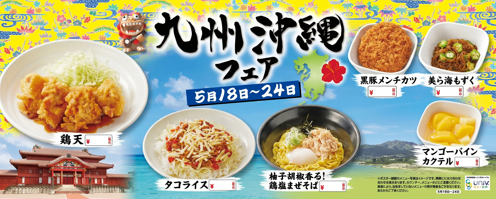
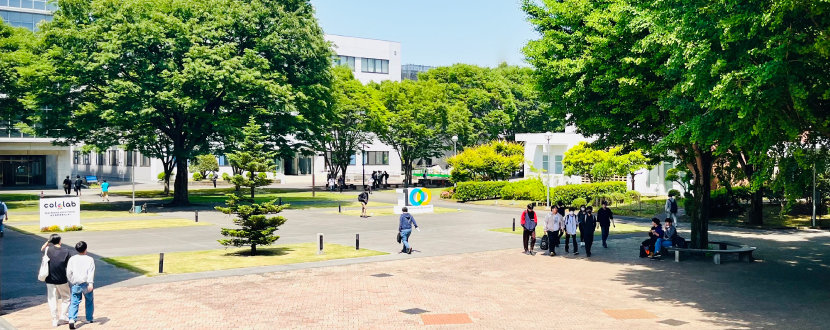

※メニューの価格は、厚木キャンパスか中野キャンパスかで異なる場合がありますので、各店舗にてご確認下さい。
※店舗によっては一部取り扱いのないメニューがある場合があります。各店舗にてご確認下さい。
学食top3
チキン竜田丼

値段：583円
担々麺

値段：550円
ねぎとろ丼

値段：583円
学食案内情報

| 営業時間 | 火,水,金 | 11:45~14:00 |
|---|---|---|
| 月,木 | 12:30~13:50 | |
| 休日 | 閉店 | |
| 営業場所 | 8号館1階 | |